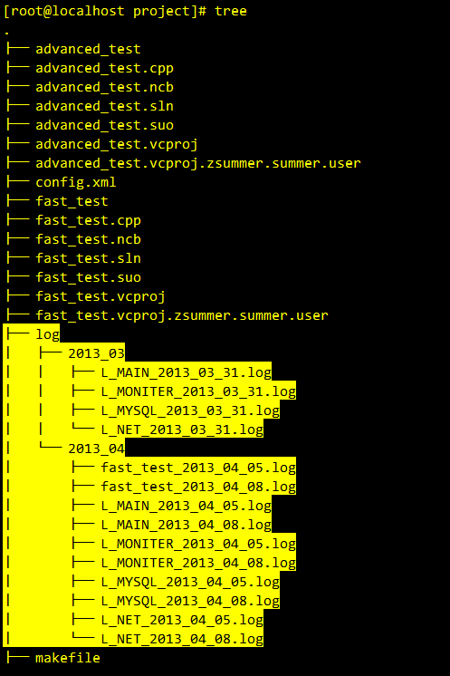
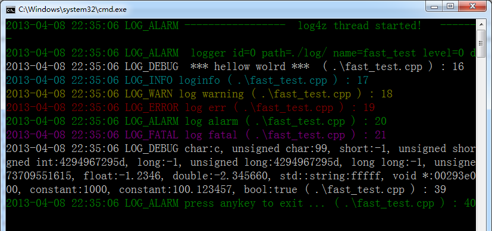
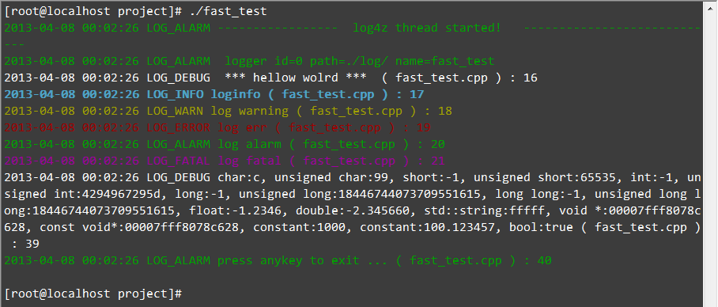

intro
Log4z is an open source C++ lightweight log library. It provides in a C++ application log and trace debug function. Using log4z can be very easy and convenient to debug log or track for conveying information to the screen, the log file
the open source site:
https://github.com/zsummer/log4z
tags:
https://github.com/zsummer/log4z/tags
The advantages of log4z
1. MIT open source license,very liberal.
2. lightweight and cross platform.
3. complete priority level control.
4. muilti log output, thread safe.
5. complete file's configure.
6. display to screen with different color.
fast_test.cpp : the simple demo
1
2
3
4
5
6
7
8
9
10
11
12
13
14
15
16
17
18
19
20
21
22
23
24
25
26
27
28
29
30
31
32
33
34
35
36
37
38
39
40
41
42
|
#include "../log4z.h"
#include <iostream>
#include <stdio.h>
using namespace zsummer::log4z;
int main(int argc, char *argv[])
{
//start log4z
ILog4zManager::GetInstance()->Start();
//LOGD: LOG WITH level LOG_DEBUG
//LOGI: LOG WITH level LOG_INFO
//...
LOGD(" *** " << "hellow wolrd" <<" *** ");
LOGI("loginfo");
LOGW("log warning");
LOGE("log err");
LOGA("log alarm");
LOGF("log fatal");
LOGD("char:" <<'c'
<< ", unsigned char:" << (unsigned char) 'c'
<< ", short:" << (short) -1
<< ", unsigned short:" << (unsigned short) -1
<< ", int:" << (int) -1
<< ", unsigned int:" << (unsigned int) -1
<< ", long:" << (long) -1
<< ", unsigned long:" << (unsigned long) -1
<< ", long long:" << (long long) -1
<< ", unsigned long long:" << (unsigned long long) -1
<< ", float:" << (float) -1.234567
<< ", double:" << (double) -2.34566
<< ", std::string:" << std::string("fffff")
<< ", void *:" << ( int *) argv
<< ", const void*:" << (const int *) argv
<< ", constant:" << 1000
<< ", constant:" << 100.12345678
<< ", bool:" << (bool) true);
LOGA("press anykey to exit ...");
getchar();
return 0;
}
| |
compile
in VS join the log4z.h and log4z.cpp
in linux, need append -lpthread. example:
g++ -lpthread -o test main.cpp ../log4z.cpp
|
the screenshot
log4z_log_tree:

log4z_windows_fast_output:

log4z_linux_fast_output

update logs
1
2
3
4
5
6
7
8
9
10
11
12
13
14
15
16
17
18
19
20
21
22
23
24
25
26
27
28
29
30
31
32
33
34
35
36
37
38
39
40
41
|
/*
* UPDATES
*
* VERSION 0.1.0 <DATE: 2010.10.4>
* create the first project.
* It support put log to screen and files,
* support log level, support one day one log file.
* support multiple thread, multiple operating system.
*
* VERSION .... <DATE: ...>
* ...
*
* VERSION 0.9.0 <DATE: 2012.12.24>
* support config files.
* support color text in screen.
* support multiple logger.
*
* VERSION 1.0.0 <DATE: 2012.12.29>
* support comments in the config file.
* add a advanced demo in the ./project
* fix some details.
*
* VERSION 1.0.1 <DATE: 2013.01.01>
* the source code haven't any change.
* fix some Comments in the log4z
* add some comments in the test projects.
* delete some needless code in the 'fast_test' demo projects, it's so simple.
*
* VERSION 1.1.0 <DATE: 2013.01.24>
* the method Start will wait for the logger thread started.
* config and add method change.
* namespace change.
* append some macro.
*
* VERSION 1.1.1 <DATE: 2013.02.23>
* add GetStatus**** mothed.
* optimize.
* VERSION 1.2.0 <DATE: 2013.04.05>
* optimize.
*
*/
| |
version 1.2.1 fix some detail bug from v1.2.0 optimize.
1. need include <stdio.h> in header file.
2. new string stream format class on format <unsigned int> type will more append character 'd' .
|
Attachments:
[log4z-1.2.0.zip]
[log4z-1.2.1.zip]